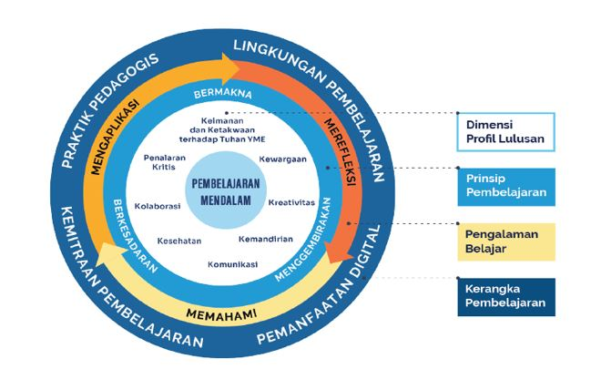
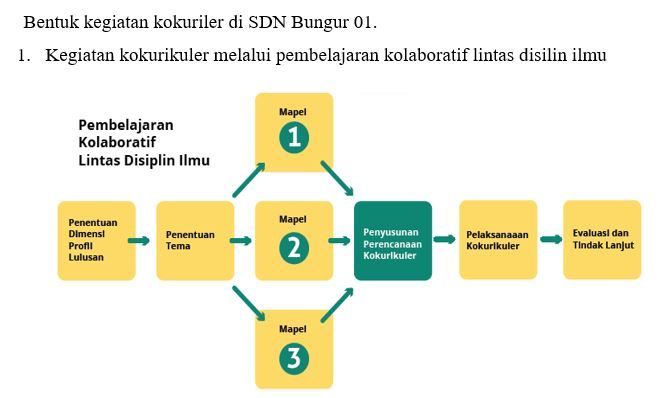
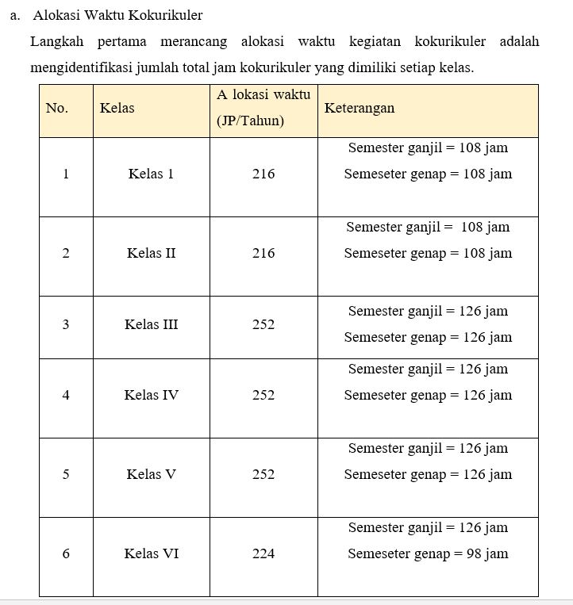

Penguatan karakter dan pembelajaran bermakna bagi siswa
Kokurikuler merupakan kegiatan pembelajaran yang dilaksanakan untuk penguatan, pendalaman, dan pengayaan kegiatan intrakurikuler dalam rangka pengembangan kompetensi, terutama penguatan karakter siswa.
Rancangan kegiatan kokurikuler sebaiknya mendorong murid bebas bereksplorasi melalui berbagai aktivitas yang menyenangkan dan bermakna. Kokurikuler berisi kegiatan eksperiensial, langsung, berorientasi tindakan, dan berbasis keterampilan.
Dari landasan tersebut, kegiatan kokurikuler dalam panduan ini disajikan dalam bentuk pembelajaran kolaboratif lintas disiplin ilmu, gerakan 7 Kebiasaan Anak Indonesia Hebat, serta berbagai pendekatan lain untuk memahami, mengaplikasikan, dan merefleksikan materi terhadap isu nyata yang relevan bagi siswa.

Delapan Dimensi Profil Kelulusan

alur kokurikuler pembelajaran kolaboratif

Alokasi Waktu Kokurikuler SDN Bungur 01 kelas I-VI
Pendaftaran siswa baru SDN 01 Bungur telah dibuka. Mari bergabung bersama sekolah yang unggul, berprestasi, dan berkarakter.